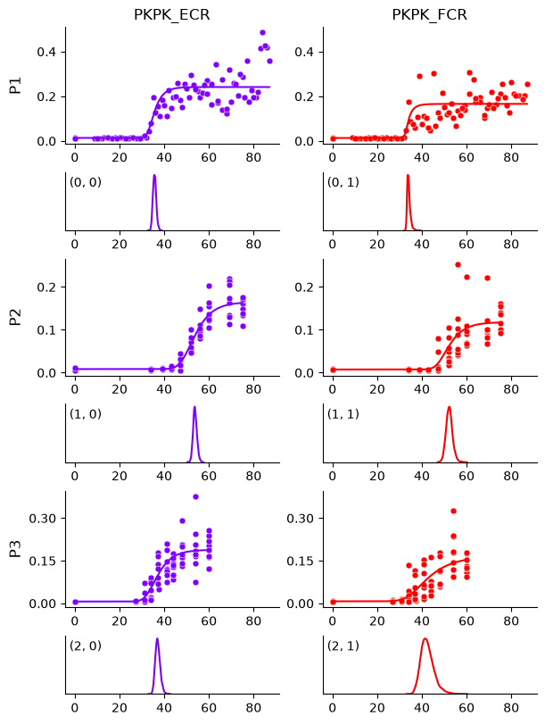
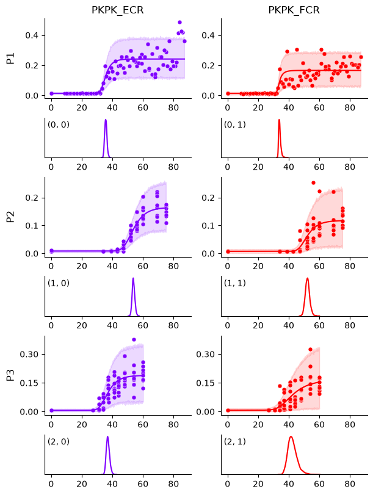

Using Logistic-5#
We use the same dataset from Getting Started with a five-parameter logistic-5 function.
import os
import pandas as pd
import hbmep as mep
url = "https://raw.githubusercontent.com/hbmep/hbmep/refs/heads/docs-data/data/mock_data.csv"
df = pd.read_csv(url)
Build the model#
model = mep.StandardHB()
# Point to the respective columns in dataframe
model.intensity = "TMSIntensity"
model.features = ["participant"]
model.response = ["PKPK_ECR", "PKPK_FCR"]
# Set the function
model._model = model.logistic5
Running the model#
# Process the dataframe
df, encoder = model.process(df)
# Run
mcmc, posterior = model.run(df=df)
# Check convergence diagnostics
summary_df = model.summary(posterior)
print(summary_df.to_string())
Show code cell output
2026-09-21 14:43:50,883 - hbmep.util.util - INFO - func:process took: 0.01 sec
2026-09-21 14:43:51,963 - hbmep.util.util - INFO - func:trace took: 1.08 sec
2026-09-21 14:43:51,964 - hbmep.model.base_model - INFO - Running...
0%| | 0/3000 [00:00<?, ?it/s]
Compiling.. : 0%| | 0/3000 [00:00<?, ?it/s]
0%| | 0/3000 [00:00<?, ?it/s]
Compiling.. : 0%| | 0/3000 [00:00<?, ?it/s]
0%| | 0/3000 [00:00<?, ?it/s]
Compiling.. : 0%| | 0/3000 [00:00<?, ?it/s]
0%| | 0/3000 [00:00<?, ?it/s]
Compiling.. : 0%| | 0/3000 [00:00<?, ?it/s]
Running chain 0: 0%| | 0/3000 [00:02<?, ?it/s]
Running chain 1: 0%| | 0/3000 [00:02<?, ?it/s]
Running chain 2: 0%| | 0/3000 [00:02<?, ?it/s]
Running chain 3: 0%| | 0/3000 [00:02<?, ?it/s]
Running chain 0: 5%|▊ | 150/3000 [00:05<00:57, 49.85it/s]
Running chain 2: 5%|▊ | 150/3000 [00:05<01:03, 44.67it/s]
Running chain 3: 5%|▊ | 150/3000 [00:05<01:04, 44.12it/s]
Running chain 1: 5%|▊ | 150/3000 [00:05<01:06, 42.74it/s]
Running chain 0: 10%|█▌ | 300/3000 [00:06<00:34, 79.06it/s]
Running chain 2: 10%|█▌ | 300/3000 [00:06<00:36, 74.12it/s]
Running chain 3: 10%|█▌ | 300/3000 [00:06<00:36, 73.47it/s]
Running chain 1: 10%|█▌ | 300/3000 [00:06<00:36, 74.14it/s]
Running chain 0: 15%|██ | 450/3000 [00:07<00:23, 106.60it/s]
Running chain 2: 15%|██ | 450/3000 [00:07<00:25, 100.55it/s]
Running chain 1: 15%|██▎ | 450/3000 [00:07<00:25, 99.95it/s]
Running chain 3: 15%|██▎ | 450/3000 [00:07<00:26, 97.05it/s]
Running chain 0: 20%|██▊ | 600/3000 [00:08<00:18, 126.76it/s]
Running chain 2: 20%|██▊ | 600/3000 [00:08<00:20, 119.63it/s]
Running chain 1: 20%|██▊ | 600/3000 [00:08<00:20, 115.90it/s]
Running chain 3: 20%|██▊ | 600/3000 [00:08<00:21, 113.46it/s]
Running chain 0: 25%|███▌ | 750/3000 [00:08<00:15, 149.35it/s]
Running chain 2: 25%|███▌ | 750/3000 [00:09<00:16, 138.42it/s]
Running chain 1: 25%|███▌ | 750/3000 [00:09<00:16, 137.35it/s]
Running chain 3: 25%|███▌ | 750/3000 [00:09<00:16, 132.70it/s]
Running chain 0: 30%|████▏ | 900/3000 [00:09<00:13, 157.43it/s]
Running chain 2: 30%|████▏ | 900/3000 [00:10<00:13, 150.31it/s]
Running chain 1: 30%|████▏ | 900/3000 [00:10<00:14, 144.34it/s]
Running chain 0: 35%|████▌ | 1050/3000 [00:10<00:11, 166.70it/s]
Running chain 3: 30%|████▏ | 900/3000 [00:10<00:14, 140.26it/s]
Running chain 2: 35%|████▌ | 1050/3000 [00:10<00:12, 156.22it/s]
Running chain 1: 35%|████▌ | 1050/3000 [00:11<00:12, 154.93it/s]
Running chain 0: 40%|█████▏ | 1200/3000 [00:11<00:10, 178.02it/s]
Running chain 3: 35%|████▌ | 1050/3000 [00:11<00:13, 149.61it/s]
Running chain 2: 40%|█████▏ | 1200/3000 [00:11<00:10, 169.05it/s]
Running chain 0: 45%|█████▊ | 1350/3000 [00:11<00:08, 189.18it/s]
Running chain 1: 40%|█████▏ | 1200/3000 [00:11<00:10, 169.45it/s]
Running chain 3: 40%|█████▏ | 1200/3000 [00:12<00:11, 161.19it/s]
Running chain 2: 45%|█████▊ | 1350/3000 [00:12<00:08, 183.51it/s]
Running chain 1: 45%|█████▊ | 1350/3000 [00:12<00:08, 184.31it/s]
Running chain 0: 50%|██████▌ | 1500/3000 [00:12<00:07, 194.78it/s]
Running chain 3: 45%|█████▊ | 1350/3000 [00:12<00:09, 171.29it/s]
Running chain 2: 50%|██████▌ | 1500/3000 [00:12<00:07, 192.20it/s]
Running chain 1: 50%|██████▌ | 1500/3000 [00:13<00:07, 196.36it/s]
Running chain 0: 55%|███████▏ | 1650/3000 [00:13<00:06, 202.75it/s]
Running chain 3: 50%|██████▌ | 1500/3000 [00:13<00:08, 181.65it/s]
Running chain 2: 55%|███████▏ | 1650/3000 [00:13<00:06, 204.46it/s]
Running chain 0: 60%|███████▊ | 1800/3000 [00:13<00:05, 214.64it/s]
Running chain 1: 55%|███████▏ | 1650/3000 [00:13<00:06, 201.72it/s]
Running chain 3: 55%|███████▏ | 1650/3000 [00:14<00:06, 193.82it/s]
Running chain 2: 60%|███████▊ | 1800/3000 [00:14<00:05, 211.31it/s]
Running chain 0: 65%|████████▍ | 1950/3000 [00:14<00:04, 212.65it/s]
Running chain 1: 60%|███████▊ | 1800/3000 [00:14<00:05, 206.48it/s]
Running chain 3: 60%|███████▊ | 1800/3000 [00:14<00:06, 194.59it/s]
Running chain 2: 65%|████████▍ | 1950/3000 [00:14<00:04, 215.65it/s]
Running chain 1: 65%|████████▍ | 1950/3000 [00:15<00:04, 212.80it/s]
Running chain 0: 70%|█████████ | 2100/3000 [00:15<00:05, 179.83it/s]
Running chain 3: 65%|████████▍ | 1950/3000 [00:15<00:05, 197.09it/s]
Running chain 2: 70%|█████████ | 2100/3000 [00:16<00:04, 184.58it/s]
Running chain 1: 70%|█████████ | 2100/3000 [00:16<00:04, 185.18it/s]
Running chain 0: 75%|█████████▊ | 2250/3000 [00:16<00:04, 169.36it/s]
Running chain 3: 70%|█████████ | 2100/3000 [00:16<00:05, 177.76it/s]
Running chain 2: 75%|█████████▊ | 2250/3000 [00:16<00:04, 176.80it/s]
Running chain 1: 75%|█████████▊ | 2250/3000 [00:17<00:04, 176.06it/s]
Running chain 0: 80%|██████████▍ | 2400/3000 [00:17<00:03, 165.71it/s]
Running chain 3: 75%|█████████▊ | 2250/3000 [00:17<00:04, 171.33it/s]
Running chain 2: 80%|██████████▍ | 2400/3000 [00:17<00:03, 169.58it/s]
Running chain 1: 80%|██████████▍ | 2400/3000 [00:18<00:03, 165.49it/s]
Running chain 0: 85%|███████████ | 2550/3000 [00:18<00:02, 155.30it/s]
Running chain 3: 80%|██████████▍ | 2400/3000 [00:18<00:03, 159.71it/s]
Running chain 2: 85%|███████████ | 2550/3000 [00:19<00:02, 157.24it/s]
Running chain 1: 85%|███████████ | 2550/3000 [00:19<00:02, 159.12it/s]
Running chain 0: 90%|███████████▋ | 2700/3000 [00:19<00:01, 157.11it/s]
Running chain 3: 85%|███████████ | 2550/3000 [00:19<00:02, 158.09it/s]
Running chain 2: 90%|███████████▋ | 2700/3000 [00:20<00:01, 156.78it/s]
Running chain 1: 90%|███████████▋ | 2700/3000 [00:20<00:01, 155.64it/s]
Running chain 0: 95%|████████████▎| 2850/3000 [00:20<00:00, 152.06it/s]
Running chain 3: 90%|███████████▋ | 2700/3000 [00:20<00:01, 155.50it/s]
Running chain 2: 95%|████████████▎| 2850/3000 [00:21<00:00, 152.30it/s]
Running chain 1: 95%|████████████▎| 2850/3000 [00:21<00:00, 154.14it/s]
Running chain 3: 95%|████████████▎| 2850/3000 [00:21<00:00, 155.81it/s]
Running chain 0: 100%|█████████████| 3000/3000 [00:21<00:00, 150.50it/s]
Running chain 0: 100%|█████████████| 3000/3000 [00:21<00:00, 138.51it/s]
Running chain 2: 100%|█████████████| 3000/3000 [00:22<00:00, 152.74it/s]
Running chain 2: 100%|█████████████| 3000/3000 [00:22<00:00, 136.18it/s]
Running chain 1: 100%|█████████████| 3000/3000 [00:22<00:00, 148.75it/s]
Running chain 1: 100%|█████████████| 3000/3000 [00:22<00:00, 134.70it/s]
Running chain 3: 100%|█████████████| 3000/3000 [00:22<00:00, 152.75it/s]
Running chain 3: 100%|█████████████| 3000/3000 [00:22<00:00, 132.30it/s]
2026-09-21 14:44:14,985 - hbmep.util.util - INFO - func:run took: 24.10 sec
2026-09-21 14:44:15,115 - hbmep.util.util - INFO - func:summary took: 0.13 sec
mean sd hdi_2.5% hdi_97.5% mcse_mean mcse_sd ess_bulk ess_tail r_hat
a_loc 41.905 6.753 28.447 54.830 0.228 0.507 1864.0 799.0 1.01
a_scale 13.124 7.901 4.652 28.787 0.256 0.437 1585.0 1061.0 1.00
b_scale 0.587 0.333 0.179 1.218 0.010 0.015 1309.0 1538.0 1.00
g_scale 0.013 0.005 0.006 0.022 0.000 0.000 1114.0 1171.0 1.00
h_scale 0.225 0.101 0.096 0.418 0.004 0.008 1104.0 907.0 1.00
v_scale 0.179 0.210 0.000 0.560 0.004 0.013 3173.0 2253.0 1.00
c₁_scale 2.929 2.738 0.091 8.703 0.050 0.050 2425.0 2724.0 1.00
c₂_scale 0.286 0.106 0.117 0.494 0.003 0.004 1225.0 1507.0 1.00
a[0, 0] 35.688 0.722 34.282 37.098 0.011 0.012 4258.0 2876.0 1.00
a[0, 1] 34.109 0.716 32.998 35.578 0.017 0.023 2105.0 1655.0 1.00
a[1, 0] 53.790 0.863 52.124 55.516 0.012 0.016 5007.0 2711.0 1.00
a[1, 1] 52.263 1.457 49.496 55.205 0.023 0.031 4257.0 2392.0 1.00
a[2, 0] 37.124 1.090 35.121 39.328 0.018 0.020 3980.0 2745.0 1.00
a[2, 1] 42.459 2.966 36.955 48.283 0.054 0.063 3522.0 2097.0 1.00
b_raw[0, 0] 0.890 0.422 0.193 1.707 0.010 0.008 1562.0 1525.0 1.00
b_raw[0, 1] 1.619 0.607 0.554 2.846 0.012 0.009 2401.0 1899.0 1.00
b_raw[1, 0] 0.435 0.209 0.099 0.840 0.005 0.004 1371.0 1589.0 1.00
b_raw[1, 1] 0.518 0.263 0.087 1.007 0.006 0.006 1472.0 1597.0 1.00
b_raw[2, 0] 0.523 0.258 0.111 1.023 0.006 0.005 1418.0 1488.0 1.00
b_raw[2, 1] 0.332 0.173 0.064 0.678 0.004 0.003 1471.0 1514.0 1.00
g_raw[0, 0] 1.214 0.378 0.537 1.990 0.011 0.006 1136.0 1175.0 1.00
g_raw[0, 1] 1.177 0.367 0.510 1.911 0.011 0.006 1124.0 1134.0 1.00
g_raw[1, 0] 0.749 0.234 0.310 1.205 0.007 0.004 1128.0 1136.0 1.00
g_raw[1, 1] 0.662 0.211 0.241 1.057 0.006 0.003 1167.0 1071.0 1.00
g_raw[2, 0] 0.563 0.197 0.223 0.964 0.005 0.003 1307.0 1467.0 1.00
g_raw[2, 1] 0.635 0.225 0.230 1.086 0.006 0.003 1268.0 1422.0 1.00
h_raw[0, 0] 1.161 0.387 0.391 1.895 0.011 0.007 1099.0 928.0 1.00
h_raw[0, 1] 0.779 0.263 0.249 1.266 0.008 0.005 1116.0 914.0 1.00
h_raw[1, 0] 0.797 0.270 0.295 1.331 0.008 0.005 1134.0 993.0 1.00
h_raw[1, 1] 0.562 0.198 0.213 0.961 0.006 0.003 1160.0 974.0 1.00
h_raw[2, 0] 0.929 0.315 0.351 1.574 0.009 0.006 1113.0 959.0 1.00
h_raw[2, 1] 0.806 0.306 0.259 1.419 0.008 0.006 1232.0 1111.0 1.00
v_raw[0, 0] 0.681 0.540 0.001 1.749 0.008 0.008 3393.0 2268.0 1.00
v_raw[0, 1] 0.666 0.540 0.000 1.757 0.008 0.008 2886.0 1496.0 1.00
v_raw[1, 0] 0.785 0.595 0.001 1.966 0.009 0.009 2916.0 1860.0 1.00
v_raw[1, 1] 0.717 0.553 0.001 1.785 0.008 0.009 3480.0 2128.0 1.00
v_raw[2, 0] 0.743 0.574 0.001 1.858 0.008 0.009 3478.0 1983.0 1.00
v_raw[2, 1] 0.725 0.551 0.001 1.822 0.008 0.008 3177.0 2056.0 1.00
c₁_raw[0, 0] 0.928 0.618 0.027 2.124 0.009 0.012 3164.0 1864.0 1.00
c₁_raw[0, 1] 0.938 0.590 0.042 2.071 0.008 0.010 3587.0 2001.0 1.00
c₁_raw[1, 0] 0.693 0.608 0.002 1.889 0.010 0.009 2259.0 2165.0 1.00
c₁_raw[1, 1] 0.826 0.598 0.009 1.982 0.008 0.009 3400.0 2059.0 1.00
c₁_raw[2, 0] 0.315 0.480 0.002 1.380 0.011 0.011 1427.0 2907.0 1.00
c₁_raw[2, 1] 0.756 0.590 0.010 1.897 0.009 0.009 3337.0 2294.0 1.00
c₂_raw[0, 0] 0.319 0.117 0.120 0.552 0.003 0.002 1376.0 1980.0 1.00
c₂_raw[0, 1] 0.516 0.188 0.176 0.875 0.005 0.003 1287.0 1679.0 1.00
c₂_raw[1, 0] 0.312 0.124 0.104 0.561 0.003 0.002 1317.0 1772.0 1.00
c₂_raw[1, 1] 0.916 0.324 0.358 1.578 0.008 0.005 1445.0 1906.0 1.00
c₂_raw[2, 0] 1.240 0.467 0.449 2.178 0.010 0.007 2097.0 2103.0 1.00
c₂_raw[2, 1] 1.416 0.466 0.577 2.310 0.012 0.007 1398.0 1764.0 1.00
Visualizing the curves#
# Create prediction dataframe
prediction_df = model.make_prediction_dataset(df=df, num_points=1000)
# Use the model to predict on the prediction dataframe
predictive = model.predict(df=prediction_df, posterior=posterior)
# Create the output directory
current_dir = os.getcwd()
output_dir = os.path.join(current_dir, "hbmep-using-logistic5")
os.makedirs(output_dir, exist_ok=True)
# Plot estimated curves
output_path = os.path.join(output_dir, "curves.pdf")
model.plot_curves(
df=df,
prediction_df=prediction_df,
predictive=predictive,
posterior=posterior,
encoder=encoder,
output_path=output_path
)

We see that the curve for participant P1 and muscle FCR is no longer biased by those few data points, compared to Getting Started. This becomes even clearer when we plot the HDIs around the curves below.
# Plot observations HDI
output_path = os.path.join(output_dir, "obs_hdi.pdf")
model.plot_curves(
df=df,
prediction_df=prediction_df,
predictive=predictive,
posterior=posterior,
encoder=encoder,
output_path="mixture_obs_hdi.pdf",
predictive_hdi_var=mep.site.obs,
predictive_hdi_prob=0.95
)

Accessing parameters#
In this model, the parameter a corresponds to the \(S_{50}\) and can be accessed as below.
# S50 parameter
a = posterior[mep.site.a]
print(a.shape)
(4000, 3, 2)